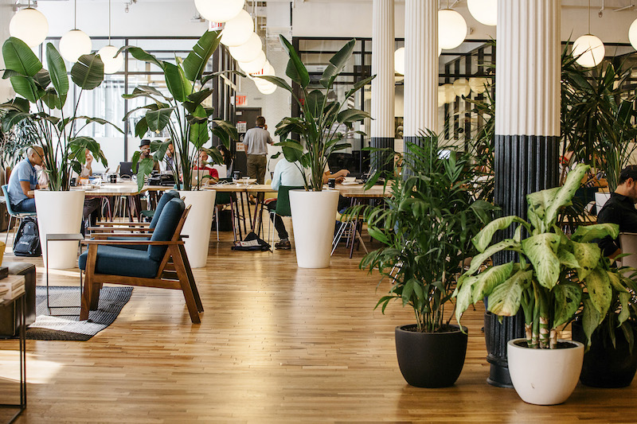
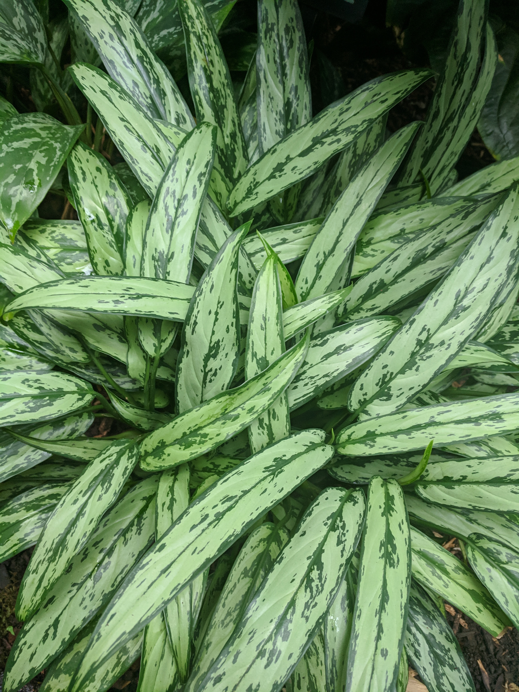
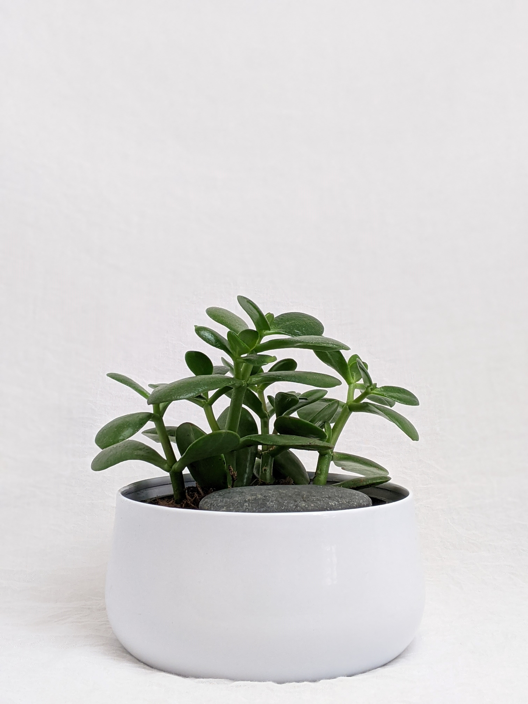
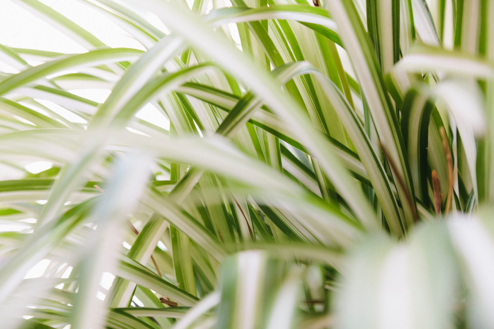
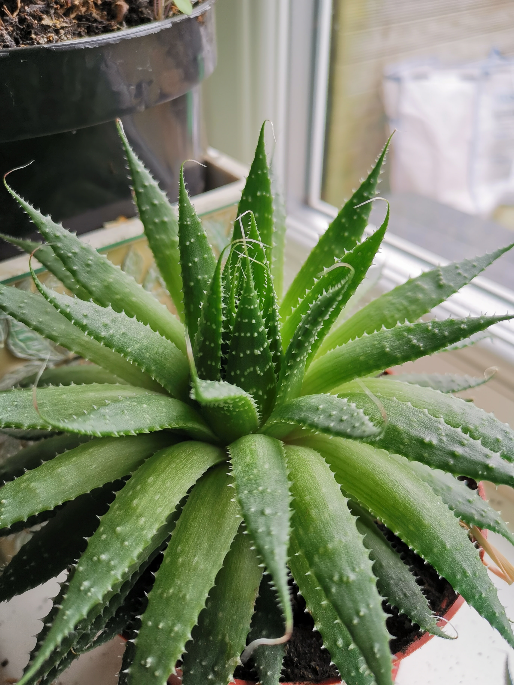

6 Best Plants For Your Office
July 18, 2022
What are the plants that is perfect for your office?
Looking for a new cubicle or desk mate? Plants are the perfect fit! Adding a plant to your office area or desk not only purifies the air, but can also reduce stress and increase productivity. When selecting the perfect plant to add to your work environment, look for something that is easy to care for and can thrive in a variety of lighting environments. Here’s a list of some of my top picks for office plants.
1. Potos
2. Philodendron
3. Aglaonema
4. Jade Plant
5. Spider Plant
6. Aloe Vera
POTHOS

With heart shaped, waxy leaves that are glossy green or variegated, the pothos plant makes a great starter plant for your office. They are easy to care for and take to several environmental factors. The plant grows in a leafy vine pattern, typically reaching 6-10 feet in containers.
Light Needs
Pothos prefer bright, indirect light, but can adjust to low light if needed.
Watering Needs
Do not let the soil dry out completely between waterings. However, damp soil will lead to root rot. The plant will let you know when it needs a good drink, as the leaves will start to droop.
Fertilizer Needs
With proper lighting, pothos benefit from fertilization three to six times during the growing season of February to October. You can use a general houseplant fertilizer with low NPK (a term that is short for nitrogen, phosphorous and potassium).
PHILODENDRON

There are several hundred species of philodendron plants with various coloring, leaf shape and size. Often confused with pothos, philodendrons are indeed different. They have a tougher leaf, a matte finish and a flat leaf. Indoor varieties are classified as climbing or non-climbing types. Philodendrons adapt to various conditions and thrive indoors year round.
Light Needs
Philodendrons prefer bright, indirect light. They work well placed near a window that does not get direct sunlight. If several leaves start to yellow, it is a sign that the plant is getting too much light. If stems are long and leggy without many leaves, the plant might be lacking light.
Watering Needs
Allow the first inch of soil to dry completely between waterings. A good way to check is to insert your finger into the soil. The space from the tip of your index finger to your first knuckle is about an inch. Droopy leaves indicate too much or not enough water, so adjust accordingly if you start to see sagging leaves.
Fertilizer Needs
Philodendrons should be fertilized monthly during the spring and summer seasons. Fertilizing every six weeks is adequate during the fall and winter months. A liquid houseplant blend is adequate.
Chinese Evergreens (Aglaonema Plants)
Aglaonema plants are a unique and decorative indoor option. They come in several interesting varieties with different color variations. The most common is the silver bay aglaonema, which has green leaves patterned with silver. If the plant receives enough light, they can produce blooms similar to a calla lilly.
Light Needs
Aglaonema plants tolerate most lighting conditions except for full sun. If put in direct light, they are susceptible to burning. Bright, diffused natural lighting or florescent lighting works best.
Watering Needs
Water every few weeks, keeping the soil evenly moist.
Fertilizer Needs
Fertilize one to two times per year with a general houseplant fertilizer.
Jade Plant
A symbol of good luck, the jade plant exhibits vibrant green leaves with a shiny, rubbery appearance. As a member of the succulent family, jade plants are very easy to care for and maintain.
Light Needs
Jade plants require bright light for optimum growth. They do the best when placed by a south facing window. With ample lighting, the jade plant stem will growth thick and woody, and the leaf tips will turn a rosy hue, adding to their beauty.
Watering Needs
Soil should dry out completely between waterings. Overwatering causes root rot and underwatering can cause shedding or browning of leaves.
Fertilizer Needs
Fertilize every six months with a general houseplant fertilizer with low NPK.
Spider Plant
The spider plant produces offshoots that resemble spiders in a web, giving the plant its name. The spider-like plants that dangle from the mother plant are known as spiderettes. Spider plants come in green or variegated varieties. They do thrive best in cooler temperatures, around 55-65 degrees Fahrenheit.
Light Needs
Spider plants require bright, indirect light.
Watering Needs
Water your spider plant thoroughly but don’t allow them to get too soggy. Spider plants prefer to dry out completely between waterings. Note that browning leaf tips can be a sign that there is too much fluoride in the water, causing salt to build up. If possible, use distilled water to avoid this.
Fertilizer Needs
Fertilize your spider plant every two weeks with a general houseplant fertilizer with low NPK. If the leaves turn brown and you have already adjusted your water source, try decreasing the amount of fertilizer used.
ALOE VERA
Grown for thousands of years, the aloe vera plant is widely used for its medicinal purposes. The plant can be used to treat minor burns and rashes. As a member of the succulent family, it is best to plant the aloe vera in a cactus potting mix or regular soil mixed with perlite.
Light Needs
Aloe vera plants do best under brightly lit conditions. Place in a south or west facing window for ample lighting.
Watering Needs
Use a planter with plenty of drainage holes. Aloe vera plants do not do well in standing water. When watering, drench the soil but make sure it can freely drain. The soil should dry out completely before watering again. Aloe vera plants commonly die because they are overwatered or not allowed to drain after a watering.
Fertilizer Needs
It is not necessary to fertilize your aloe vera plant.
Look what you need for
Check our plants based on what you need. We got a variety of ornamental plants just for you!
SHOP NOWRecent Posts